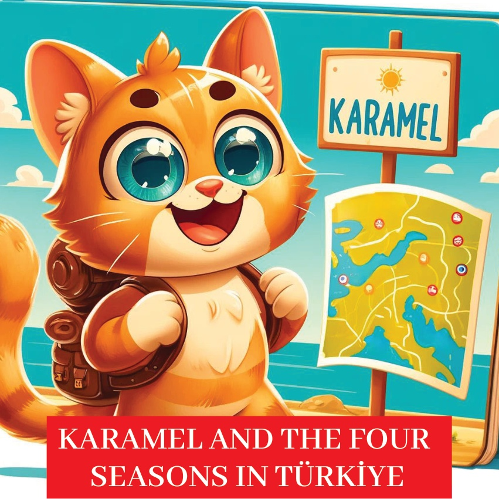

1

2

3
从前，有一只名叫卡拉梅尔的爱好奇的小猫，她喜欢探索和体验新鲜事物。
有一天，她决定踏上前往土耳其的旅程，去看看不同的地区如何庆祝四季。
她兴奋地收拾好背包，开始了她的冒险。
4
5
爱琴海地区的春季
卡拉梅尔的第一个目的地是爱琴海地区，
那里正值春意盎然。
她参观了美丽的城市伊兹密尔，
在那里她看到了五彩缤纷的花朵、
盛开的树木，以及人们用音乐和舞蹈庆祝
春天的到来。
6
7
地中海地区的夏日
接下来，卡拉梅尔前往地中海地区，
在那里体验了安塔利亚炎热而阳光明媚的夏天。
她参观了迷人的海滩，
在清澈见底的海水中游泳，
并享受着夏日节日的欢快气氛。
8
9
黑海地区的秋日
卡拉梅尔随后前往黑海地区，在那里她欣赏了里泽令人惊叹的秋季红叶。山峦被红色、橙色和黄色渲染着，卡拉梅尔加入了当地人采摘茶叶的行列，这是一项传统的秋季活动。
10
11
东安纳托利亚的冬季
卡拉梅尔的下一个目的地是东安纳托利亚地区，她在埃尔津鲁姆体验了那里的雪天冬季。她喜欢在雪地里玩耍，观看人们滑雪，并参与传统的冬季庆典。
12
13
卡拉梅尔随后前往卡帕多奇亚，
欣赏那独特的春季风光。
她惊叹于盛开的野花和生机勃勃的绿色山谷，
享受着仙人烟囱和热气球迷人景色。
14
15
东南部安纳托利亚的夏日冒险
在东南部安纳托利亚地区，卡拉梅尔体验着夏日的温暖。她参观了历史遗址，并享受了当地节日里传统音乐和舞蹈，感受着该地区丰富的文化遗产。
16
17
安特利亚中安纳托利亚的秋天
卡拉梅尔继续她的旅程，来到了中安纳托利亚，在那里她欣赏着秋天的金黄色调。她参观了古城哈투사，在美丽的秋季风光中了解了它的历史。
18
19
满怀喜悦，
满脑海回忆，
关于四季的故事，
卡拉梅尔回到了家。
她意识到土耳其的每个季节
都有其独特的魅力和传统，这让她
这段冒险之旅真正难忘。
20
21
22